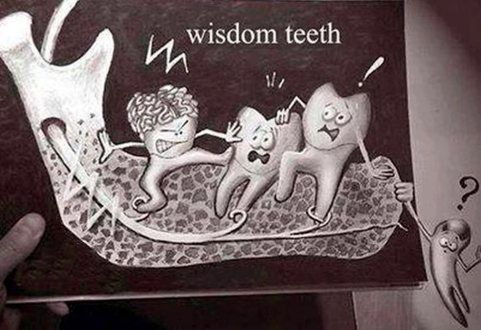

Wisdom Teeth erupt between the ages of 17-25. When a wisdom tooth does not have enough space to erupt, it gets trapped in the bone. Most people have four wisdom teeth one in each corner of the mouth, but each tooth can be at a different stage of eruption and position. Being at the back of the mouth , good oral hygiene remains a challenge. Thus these teeth are prone to infection. Also because of their position and angulation, wisdom teeth can cause pressure on adjacent teeth. A flare up can cause sudden onset of symptoms.
- Infection in the wisdom tooth and/or adjacent tooth.
- Pain over the angle of the jaw.
- Swelling
- Headache and other facial pains.
- Inability to open mouth properly.
- Inflammation or swollen gums over the affected area
- Pressure in adjacent teeth leading to crowding.
- X-Rays- help to determine position an angulation of the tooth along with shape of the roots.
- Medication-Antibiotics and anti-inflammatories are used to reduce pain, infection and swelling.
- Surgery: Operculectomy or disimpaction, either the flap of gum directly overlying the tooth can be trimmed to facilitate tooth eruption or if the tooth is infected or if there is insufficient space for eruption than the tooth is surgically removed.
